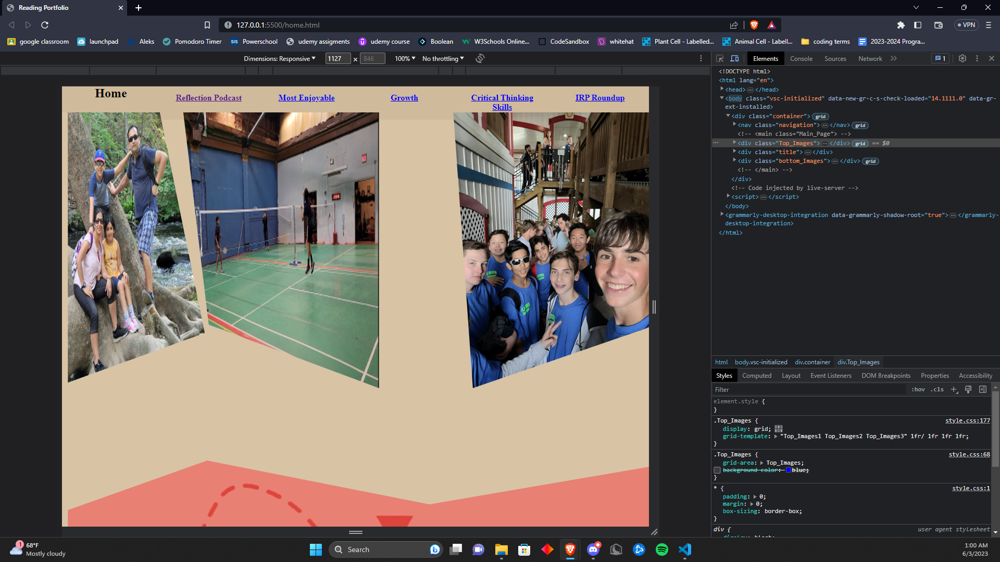
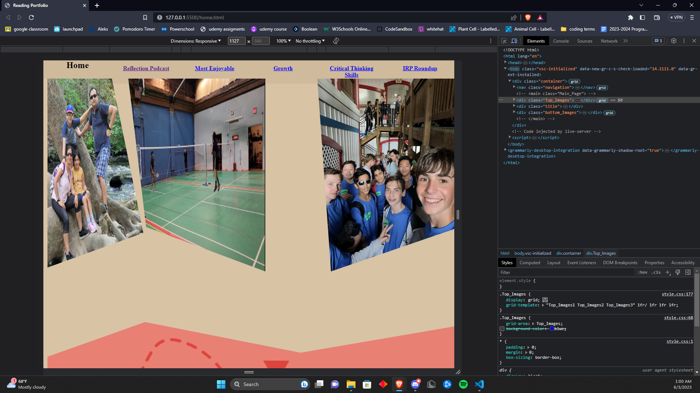

What I consider to be the most challenging task that I have had to do in reading class has nothing to do with reading. It is actually this project. Instead of using the template that Mrs. Cameron provided for us and just having to fill out the information, me and my friend Felix decided to code the website ourselves from scratch. Adminittly Felix did do all the designing but I tried to pull my weight in the actual coding. On the first day, Felix decided to trust me with the coding, that was a huge mistake. We had differing opinions on how to create the website, but I decided to go with my way. About 6 hours later I gave up and went with Felix's way which was infinitely easier. Then even with this, there were many bugs. This is inevitable when it comes to coding. There were tons of puzzles to solve, big and small alike. I had to find ways around them. At the point of writing this, most of those puzzles have been solved with permanent solutions (but I might be jinxing myself, and there will probably be some random bug that I could never have foreseen that comes up and takes hours of my life to solve). And even though it took me many hours of critical problem-solving, this was a valuable experience. I learned many lessons. I will try to think about many different ways to of solving the problem before actually going for it. I will work on dynamic web design as I am coding the website, so I don't have to redo all the code to make it fit on different devices. This project showed me that I still have much to learn, but it has also encouraged me as I see the final product come along, something I never could have done a year ago.
 
